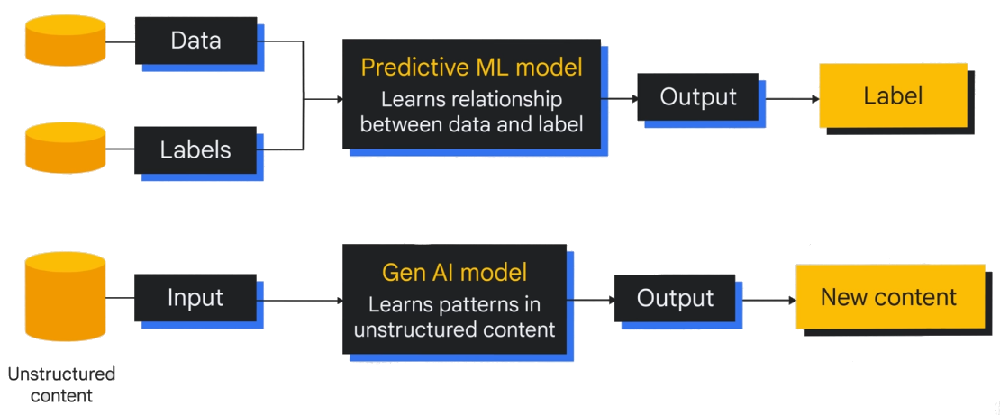
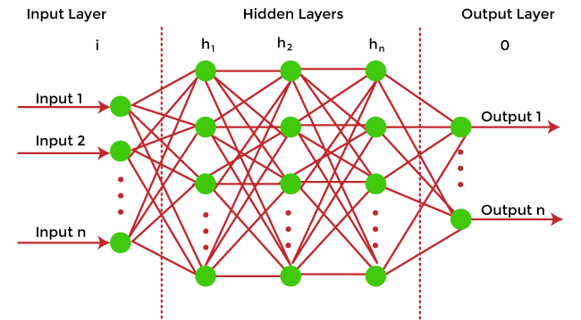

Artificial intelligence (AI) is a branch of computer science that seeks to create systems capable of performing tasks that usually require human intelligence. This includes processes such as voice recognition, decision making, automatic translation, or image recognition. AI is based on algorithms and mathematical models that allow machines to learn from data and improve their responses over time.
These technologies are used in a wide variety of fields, from healthcare to the automotive industry or the financial sector. The evolution of AI is profoundly transforming the way we live and work, although it also raises ethical and social questions about privacy, control, and impact on employment. In the future, AI is expected to be a fundamental tool for addressing major global challenges. 
Artificial intelligence (AI) works by using algorithms and mathematical models that allow machines to "learn" from data and perform tasks autonomously or with minimal human intervention. There are several approaches to developing AI, but the most common are:
1. **Supervised learning**: In this method, a system is trained with a labeled dataset (where the correct answer is known). As the model processes the data, it adjusts to minimize errors in its predictions. This approach is common in classification tasks, such as object detection in images.
2. **Unsupervised learning**: Unlike supervised learning, this method does not use predefined labels. The system detects patterns and structures in the data to identify relationships or groups. It is useful for tasks such as customer segmentation or fraud detection.
3. **Reinforcement learning**: This type of learning is based on the interaction of an agent (the machine) with its environment. The agent performs actions and receives rewards or penalties based on the success of its actions. As it interacts, the agent learns to improve its decisions to maximize rewards, as in chess or autonomous robots.
These methods, among others, are based on neural networks, which are structures inspired by the human brain, capable of processing information in a very complex way and adapting to new situations. In summary, AI learns from data to make decisions, identify patterns, or solve problems more and more accurately.
Imagine you have a machine (or a computer) and you want it to learn something new, but you don't tell it exactly what to do. Instead, you give it many examples and let it learn on its own. This is what machine learning does.
For example, if you wanted to teach it to recognize pictures of cats, you would give it a large number of pictures of cats (and also other things, like dogs or trees). In each picture, you would say "this is a picture of a cat" or "this is not". The machine processes all these images and, over time, learns to identify the characteristics of a cat (such as pointy ears, whiskers, etc.).
How does it work step by step?
Input data: The machine needs examples to learn. If we want it to learn to recognize a cat, we give it pictures labeled as "cat" or "not cat".
Model: The system creates a model from this data, that is, a way to interpret it (like a rule). For example, it may learn that pictures with pointy ears are more likely to be cats.
Prediction: Once the model is trained, it can start making predictions. If you give it a new picture, it will try to identify if it is a cat or not, based on what it has learned.
Improvement: When the machine makes mistakes, it adjusts and tries to improve. The more data we give it, the better it gets.
In summary, machine learning is like teaching a child to recognize things through examples and practice, instead of teaching them with specific rules. The more examples (data) it has, the better it will be at making decisions or predictions.
